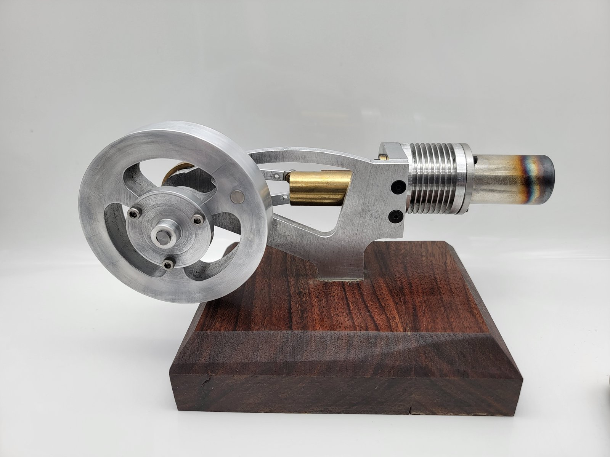
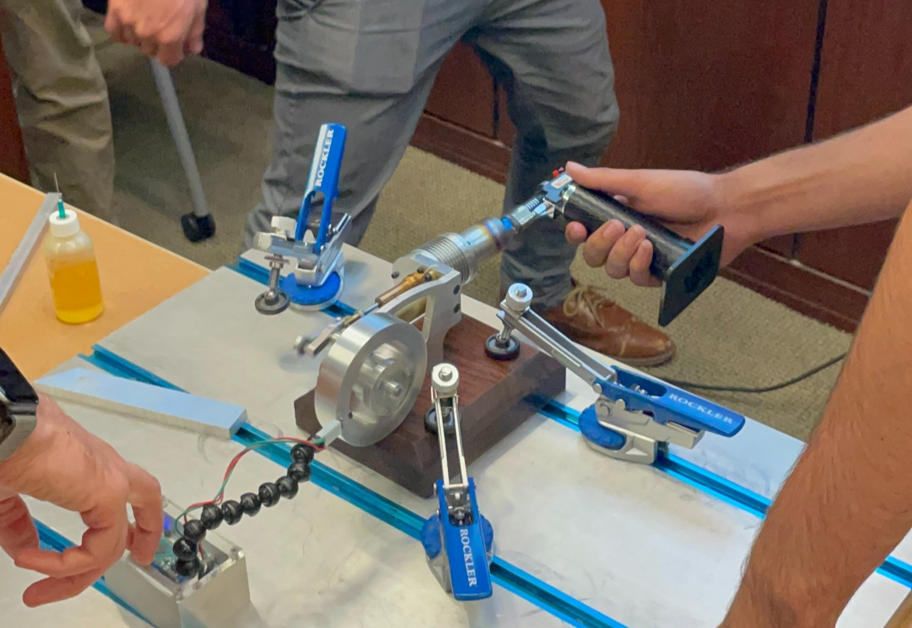
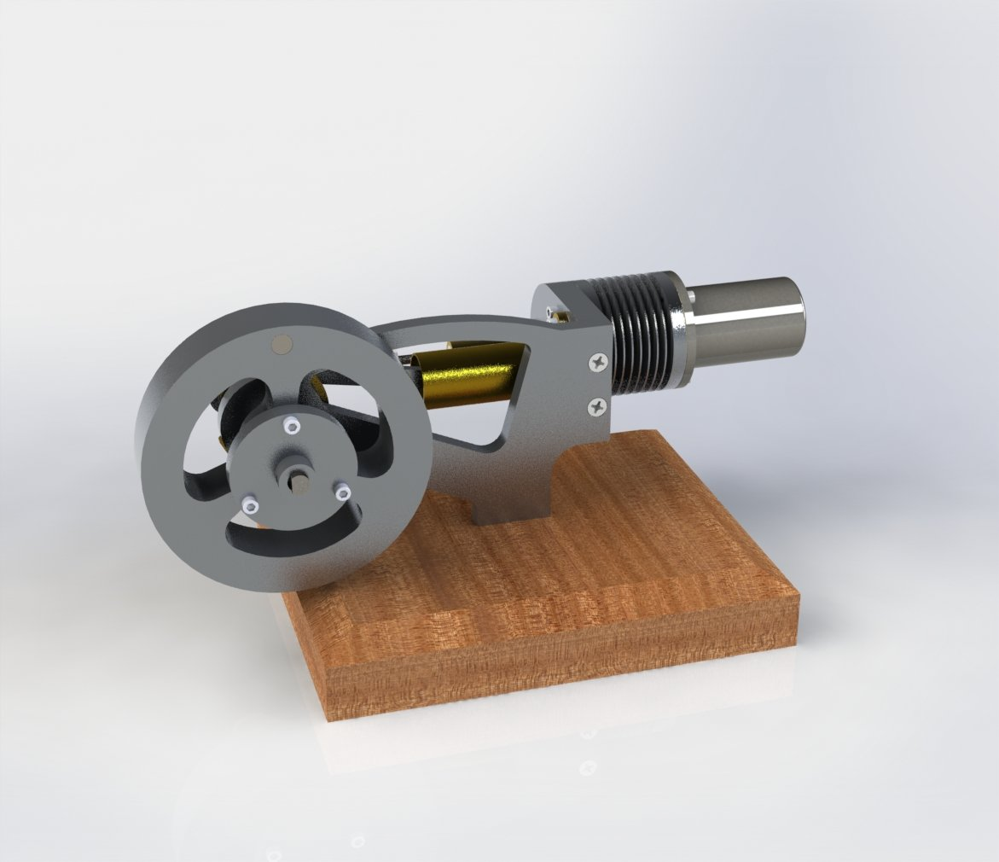
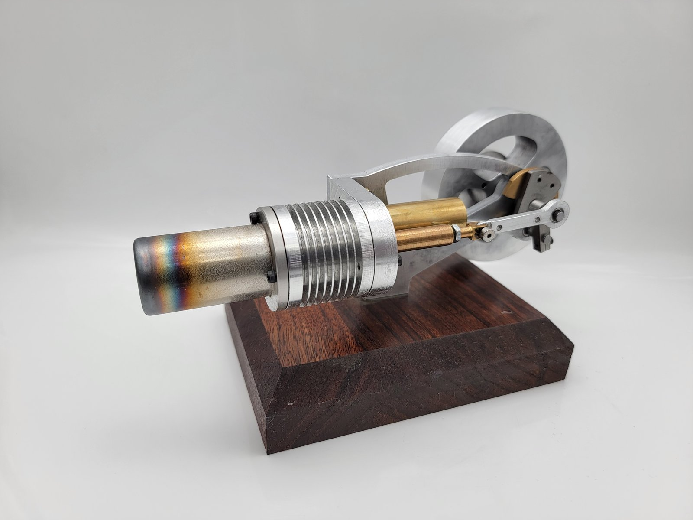

Precision Manufacturing, May 2024
Stirling Engine
A complete Stirling-cycle heat engine: designed in SolidWorks, planned around a formal GD&T tolerance stackup, and machined as 18 parts in aluminum, brass, stainless steel, and walnut.

Overview
A Stirling engine is a demanding first machine: it produces so little power that any excess friction, misalignment, or leakage stops it from running. The displacer and power piston must run nearly frictionless in their bores while still sealing, so most of the work was in tolerance design, before any machining started.
The engine runs on a sealed charge of air. A flame heats one end of the cylinder, the displacer moves the air between the hot and cool ends, and the pressure swing that results pushes the power piston, which turns the flywheel through the crank. With a small flame as the only heat source, there is very little power to spare.


Design for manufacturing
I modeled the full assembly in SolidWorks and built the manufacturing plan around a GD&T tolerance stackup: identifying which fits actually govern whether the engine runs, allocating tolerance where the machines could hold it, and loosening everything that didn't matter. Fits between the piston, cylinder, and crank determined the machining sequence.
Having the whole assembly in CAD first meant clearances and the crank geometry could be checked before any stock was cut.
Build
All 18 parts were machined and assembled in-house on CNC mills and lathes across four materials: aluminum, brass, stainless steel, and walnut. The finished engine runs from the heat of a small flame.
The bores and the parts that run in them were machined to the fits set in the stackup, which is what lets the flywheel keep turning on so little power. The heat tint on the stainless hot end comes from running the engine over the flame.
